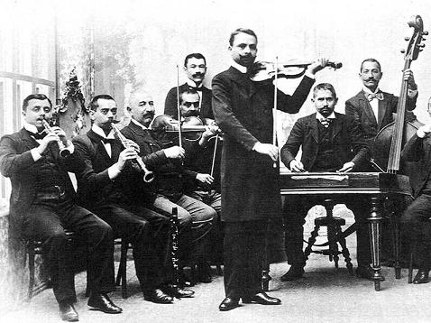

Elterjedése
A magyar nóták közül elsősorban azok a nóták folklorizálódtak, amelyek a népdal közelségéből indultak ki. Ezeknek a szerzőjét ma már nem tudjuk megállapítani, ilyenek például: Szeretnék szántani; Kerek ez a zsemlye; Be van az én szűröm ujja kötve; Végigmentem az ormódi temetőn; Vörös bort ittam az este; Zsindelyezik a kaszárnya tetejét; Édesanyám, ha bejön Egerbe, stb. Nagyon sok magyar nótának a dallamszerkezete, szövege nagyon hasonlít a népdalokéhoz, ilyen például a Zöldre van a rácsos kapu festve kezdetű is. A hasonlóság nem véletlen: a népszínművek számára írt népies dalokból alakult ki a magyar népdal új stílusa a XIX. század legvégén.
A magyar nóta műfaja a 20. század elején hanyatlásnak indult és sokan úgy tartották, hogy végleg kiöregedett. Voltak, akik a nóta rovására írták, hogy ártott a hagyományos népi zenei ízlésnek. Ugyanakkor serkentette az új stílusú magyar népdalok kibontakozását, ezeknek forrást biztosított. Az igazi probléma, ami a hanyatlását előidézte, valószínűleg a zeneileg magas színvonalú operettek és operák megjelenése volt a nép számára is elérhető formában. A magyar nótát sokan kritizálni kezdték egyszerűbb dallamvilága miatt, de arról megfeledkeztek, hogy míg az operettek és az operák hallgató füleknek íródtak, addig a magyar nótákat az emberek dalos ajkára szánták. A két világháború között közel húszezer nótát "szereztek" a társadalom minden rétegét képviselő nótacsinálók. Kodály Zoltán korabeli megállapítása szerint: „Hervadás, sőt rothadás szagú költészet, érthető összefüggésben a pusztuló dzsentrivel”.[1]
„ Hegedűjén a magyarnak
úgy zokog a magyar nóta,
mint hogyha egy egész nemzet
eltemetett álma volna.
”
– Wass Albert: Magyarok dalolnak
A népdalon nevelkedett dalos ajkú közönségnek gyorsan a fülébe másztak az újabb stílusú harmóniák is és ezzel kibővítette harmóniaérzéküket és nagyban hozzájárult a dalolás, dalolni tudás örömének terjedéséhez. A magyarnótát dalolni kell, aki csak hallgatja, annak kisebb élményt nyújt, mint aki a hangjával is azonosulni tud e mai szemmel már archaikus népi kulturális hagyománynak számító magyar műfajjal.
